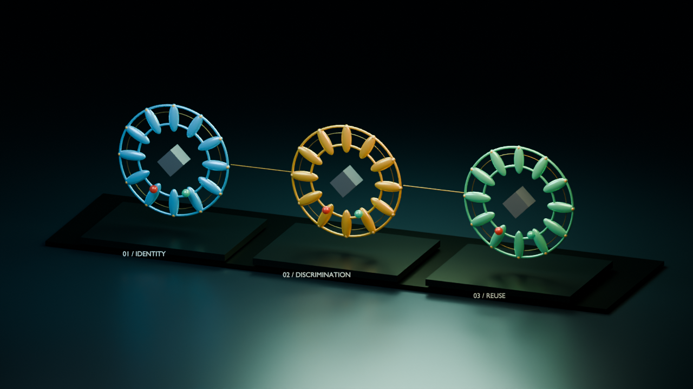

No model call or live feed. Actual local guard observations; synthetic transfer histories.

Actual offline X3D import into Blender, with studio lighting/materials and typography omitted. This is an authored still, not native browser pixels.
01 / THE EXPERIMENTS
Predict first. Then change one condition.
01
One byte. A different identity.
If the picture would look the same, does the old digest still identify the input?
Choose Append one newline. SHA-256 no longer matches: authored geometry can stay the same while exact bytes change.
Enable Issue a new matching digest myself. Consistency returns; independent review does not. The file changer can calculate its new hash.
Aha: identity, equivalence and authenticity differ. Box-to-Sphere changes authored geometry; this tab hashes text and renders neither shader fixture.
02
Green is not enough.
What can a perfect pass rate hide when every example is already valid?
Choose Always accept everything; remove failing controls. All selected fixtures pass, but the guard cannot qualify without rejecting a known failure.
Restore negatives to expose false accepts. The Executed targeted guard agrees with two positive and two negative expectations.
Aha: a useful test discriminates. This guard detects raw GLSL in a URL channel; it does not compile shaders.
03
A retry is not a return.
Should three runs of the same consumption create three new capabilities?
Choose Retry it three times: three row IDs, one consumption. Identity is the tuple guard, target, input digest.
A different input and target yields two tuples. Origin-domain and mismatched inputs are excluded with reasons.
Aha: more activity need not mean more reuse. A target label in this authored example proves no external adoption.
Ask: what nearby change should make this claim fail? A controlled counterexample makes an explanation challengeable.
02 / READ THE INSTRUMENT
One result cannot light every facet.
Facet
Evidence available here
Separate question still open
Byte identity
The browser recomputes SHA-256 for the catalog, scene and fixture text.
Who authored or authenticated the receipt? Matching hashes alone do not answer.
Guard behavior
Python executed a targeted structural guard on five authored fixtures during the build. Browser controls compare those saved observations with explicit expectations.
Does the guard work on other fault classes or an unseen corpus?
Shader correctness
The fixture exercises how shader source is represented in an X3D channel.
Was a shader fetched, compiled, linked and rendered successfully? This lab does none of those fixture operations.
X3D representation
The three mechanisms are actual X3D geometry; gate colors reflect the selected local control result.
Are the pixels readable on another browser/device? Schema checks do not establish that.
Reuse
A pure protocol rule filters and deduplicates explicitly authored ledger rows.
Did an independently maintained consumer accept the improvement? No live adoption is claimed.
Learning
Predict, intervene, compare and inspect.
Did this improve understanding? That needs a learner study or other named human evidence.
Rotation is optional illustration, paused by default. It measures no repository activity, confidence, learning or throughput. Camera changes do not change evidence.
03 / THREE KINDS OF RECORD
Archive, teaching replay, executed local check.
The Atlas remembers.
The observatory displays a pinned historical graph. Counts and grades describe that snapshot. Quote support does not rerun the underlying physical, performance or learning experiment.
Feathers describe proposed interfaces, not measured integrations.
The workflow proposes.
The four-stage replay uses invented records. Flyte's simulated day uses a simulated clock, replies and decisions with declared local machinery. Neither proves live adoption.
Here, Python actually checked five authored shader fixtures. The execution is real; the transfer histories remain synthetic.
Record origin and execution separately. An authored fixture can be actually executed. A historical success can be stale for today's input.
04 / TAKE THE CLAIM APART
Keep the observation beside the object.
Observation .json saves inputs, digests, controls, result and scope. Current .x3d saves displayed mechanisms with observation metadata. Exporting explanatory geometry does not compile the shader fixtures.
Inspect gobbler.intervention-observation/1. Separate the saved guard outcome from your synthetic ledger choice. What must rerun when an input or instrument changes?
For another consumer, test identity, transforms, geometry, materials, text and interactions separately. Record conversion losses; an attractive render can hide them.
05 / FOLD THE METHOD BACK
A small habit that travels.
In maths, name an invariant and tolerance. In STEM, retain units, frames and a reference. In chess, distinguish attacks, legal moves and engine opinions. In ML, freeze tasks, splits and model revisions. In music and heritage, retain source context and human judgment.
Carry a question, exact input, intervention and scoped witness together. A larger archive records accumulation; useful uptake by another consumer supports a stronger flywheel claim.